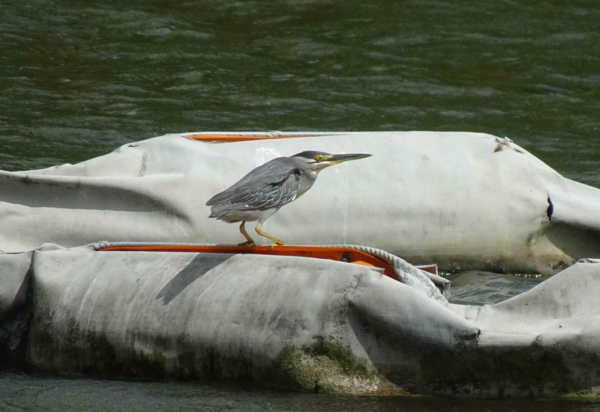
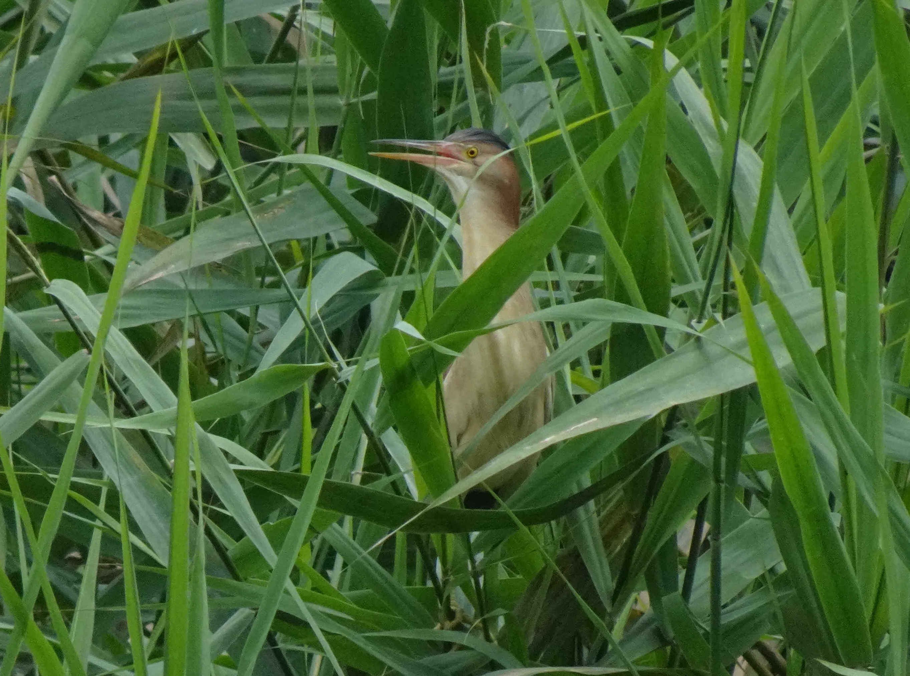
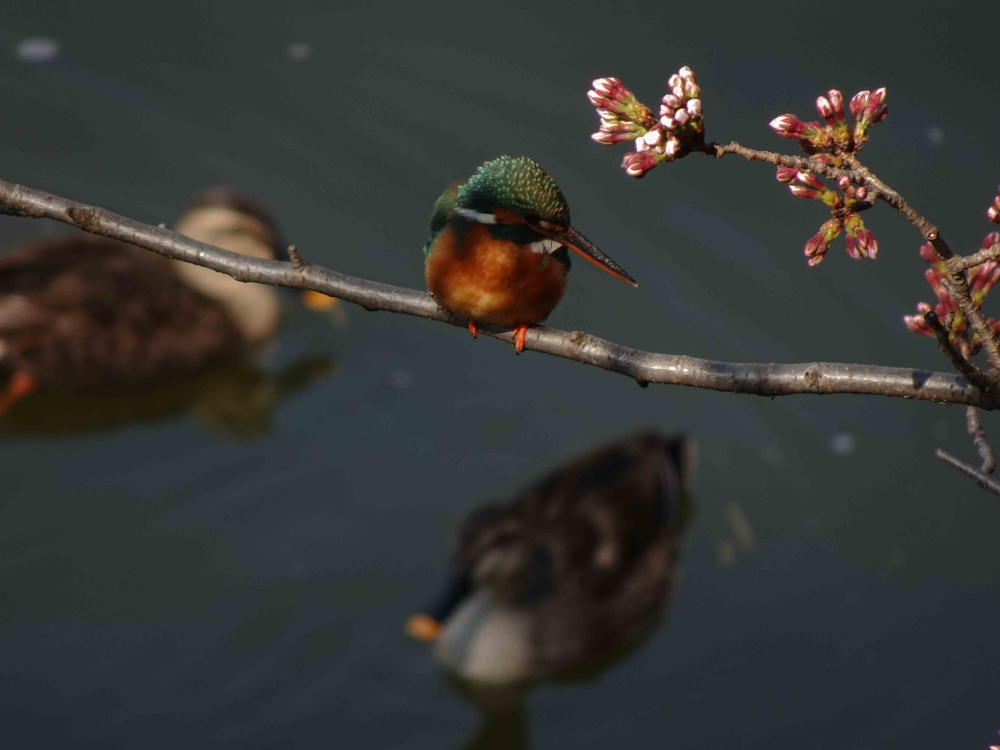

Pierre Alquier
RIKEN AIP - Approximate Bayesian Inference Team - Research scientist
Grey heron - アオサギ
Juvenile, Senzoku Ike, April 2021.

Juvenile, Institute for Nature Study, Meguro, October 2020.

Nakameguro, December 2020.
Nakameguro, May 2021.
Juvenile, Nakameguro, December 2020.

Juvenile, Nakameguro, December 2020.

Juvenile, Senzoku Ike, March 2021.

Shakuji River, February 2021.

Little egret - コサギ
Tsukishima, September 2020.

Tsukishima, September 2020.

Tsukishima, September 2020.

Koike, February 2021.

Koike, February 2021.

Koike, February 2021.

Nakameguro, March 2021.

Nakameguro, October 2020.

Black-crowned night heron - ゴイサギ
Kanda river, March 2021.

Shakuji river, March 2021.

Nakameguro, September 2020.

Nakameguro, March 2021.

Juvenile (1st year), Nakameguro, November 2020.

Juvenile (1st year), Nakameguro, November 2020.

Juvenile (2nd year) with Reeves' pond turtle, Nakameguro, May 2021.

Nakameguro, October 2020.

Nakameguro, November 2020.

Nakameguro, April 2021.

Nakameguro, October 2020. "Claude", the night heron with a broken foot, seen every week in Nakameguro from Sept. to Dec. 2020.

Nakameguro, October 2020. Claude.

Nakameguro, November 2020. Claude catched a fish!

Great egret - ダイサギ
Tsukishima, September 2020.

Institute for Nature Study, Meguro, October 2020.

Institute for Nature Study, Meguro, March 2021.

Institute for Nature Study, Meguro, March 2021.
Striated heron - ササゴイ
Ukima park, May 2021. "Sasagoi" is a bit more rare than the other herons, so I didn't have the opportunity to take many photos. The only one I have is from far away. I hope I can take better photos in the future...

Yellow bittern - ヨシゴイ
Kawagoe, July 2021.

Kawagoe, July 2021.
Kawagoe, July 2021.
Other birds - 他の鳥
Tufted duck and northern pintails, Senzoku Ike, October 2020.
Tufted duck, Senzoku Ike, February 2021.

Carrion crow, Ukima park, May 2021.

White wagtail, Nakameguro, September 2020.

Little grebe, Hibiya park, October 2020.

Little grebe, Senzoku Ike, December 2020.

Kingfisher (with little egret), Nakameguro, March 2021.

Kingfisher, Nakameguro, March 2021.
Kingfisher, Zenpukuji river, March 2021.
Japanese white-eye, Nakameguro, March 2021.

Black-headed gull, Nakameguro, November 2020.

Great cormorant, Nakameguro, November 2020.

Brown-eared bulbul, Nakameguro, November 2020.

Japanese tit, Zenpukuji river, February 2021.

Chinese hwamei, Mitsuike park (Yokohama), February 2021.

Dusky thrush, Nakameguro, January 2021.

Mallard, Kanda river, March 2021.

Eastern spot-billed duck, Shakuji River, February 2021.

Eastern spot-billed duck with Reeves' pond turtle, Nakameguro, September 2020.

Reeves' pond turtle, Nakameguro, October 2020.

Japanese rat snake, Nakameguro, April 2021.